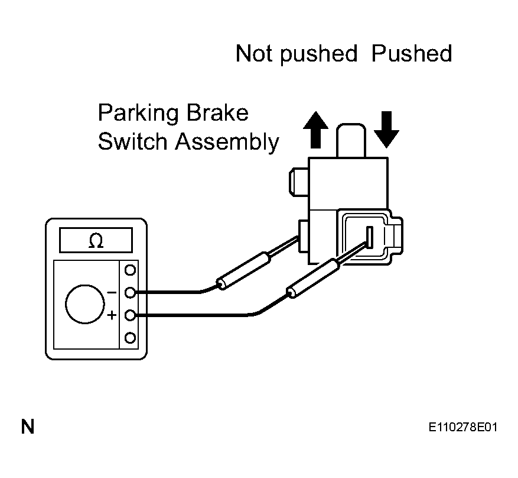
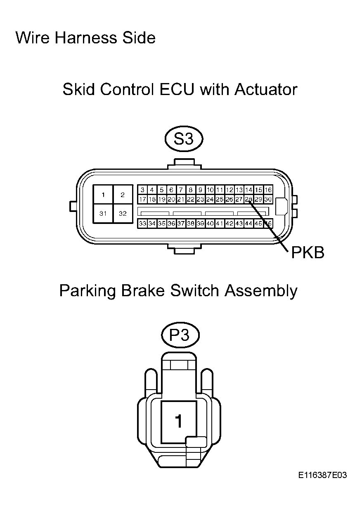
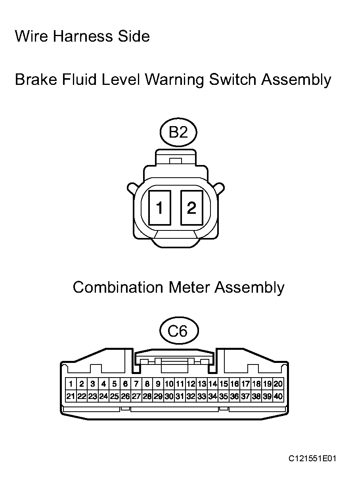
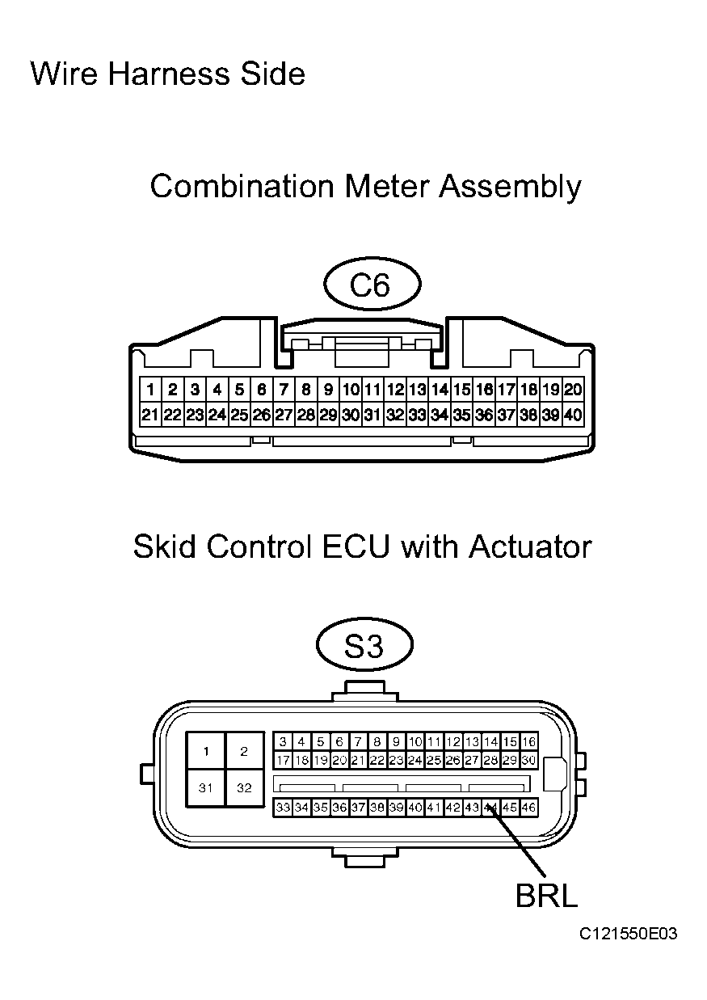

Inspection Procedure
- CHOOSE DIAGNOSIS METHOD
- Choose the diagnosis method.
Method
METHOD REFERENCEMethod Proceed to Using intelligent tester A Not using intelligent tester B
B: Go to step 3
A: Go to next step
- Choose the diagnosis method.
- PERFORM ACTIVE TEST BY INTELLIGENT TESTER (BRAKE WARNING LIGHT)
- Select the ACTIVE TEST, generate a control command, and then check that the BRAKE warning light illuminates.
Skid control ECU with actuator
MEASUREMENT ITEM DIAGNOSTIC CHARTItem Measurement Item / Range (Display) Diagnostic Note BRAKE WRN LIGHT Turns brake warning light ON / OFF Observe combination meter OK: Brake warning light illuminates.
HINT:
When replacing the skid control ECU with actuator, perform the zero point calibration (see CALIBRATION ).
OK: REPLACE BRAKE ACTUATOR ASSEMBLY
NG: Go to Next Step
- Select the ACTIVE TEST, generate a control command, and then check that the BRAKE warning light illuminates.
- CHECK DTC FOR ABS
- Check for DTCs (see DTC CHECK / CLEAR
).
Result
RESULT REFERENCEResult Proceed to DTC is not output A DTC is output B
B: REPAIR CIRCUIT INDICATED BY OUTPUT CODE
A: Go to next step
- Check for DTCs (see DTC CHECK / CLEAR
).
- CHECK WIRE HARNESS (SKID CONTROL ECU - BODY GROUND)
- Disconnect the S3 ECU connector.
- Measure the resistance of the wire harness side connector.
Standard resistance
TESTER CONNECTION SPECIFIED CONDITIONTester Connection Switch Condition Specified Condition S3-28 (PKB) - Body ground Parking brake switch ON Below 1 Ω Parking brake switch OFF 10 kΩ or higher
OK: Go to step 7
NG: Go to Next Step
- INSPECT PARKING BRAKE SWITCH ASSEMBLY
- Remove the parking brake switch.
- Measure the resistance of the switch.
Standard resistance
TESTER CONNECTION SPECIFIED CONDITIONTester Connection Switch Condition Specified Condition 1 - Body ground Pushed Below 1 Ω Not pushed 10 kΩ or higher
NG: REPLACE PARKING BRAKE SWITCH ASSEMBLY

Courtesy of © TOYOTA, LICENSE AGREEMENT TMS1002OK: Go to Next Step
- CHECK WIRE HARNESS (SKID CONTROL ECU - PARKING BRAKE SWITCH)
- Disconnect the S3 ECU connector.
- Disconnect the P3 switch connector.
- Measure the resistance of the wire harness side connectors.
Standard resistance
TESTER CONNECTION SPECIFIED CONDITIONTester Connection Specified Condition S3-28 (PKB) - P3-1 Below 1 Ω
NG: REPAIR OR REPLACE HARNESS AND CONNECTOR

Courtesy of © TOYOTA, LICENSE AGREEMENT TMS1002OK: Go to Next Step
- INSPECT BRAKE FLUID LEVEL WARNING SWITCH ASSEMBLY
- Remove the reservoir tank cap and strainer.
- Disconnect the B2 switch connector.
- Measure the resistance of the switch.
Standard resistance
TESTER CONNECTION SPECIFIED CONDITIONTester Connection Switch Condition Specified Condition 1 - 2 Float DOWN Below 1 Ω Float UP 10 kΩ or higher
NG: REPLACE BRAKE MASTER CYLINDER SUB-ASSEMBLY
OK: Go to Next Step
- CHECK WIRE HARNESS (WARNING SWITCH - COMBINATION METER AND BODY GROUND)
- Disconnect the B2 switch connector.
- Disconnect the C6 meter connector.
- Measure the resistance of the wire harness side connectors.
Standard resistance
TESTER CONNECTION SPECIFIED CONDITIONTester Connection Specified Condition B2-1 - C6-36 Below 1 Ω B2-2 - Body ground
NG: REPAIR OR REPLACE HARNESS AND CONNECTOR

Courtesy of © TOYOTA, LICENSE AGREEMENT TMS1002OK: Go to Next Step
- CHECK WIRE HARNESS (SKID CONTROL ECU - COMBINATION METER)
- Disconnect the S3 ECU connector.
- Disconnect the C6 meter connector.
Measure the resistance of the wire harness side connectors.
Standard resistance
TESTER CONNECTION SPECIFIED CONDITIONTester Connection Specified Condition S3-44 (BRL) - C6-38 Below 1 Ω HINT:
When replacing the skid control ECU with actuator, perform the zero point calibration (see CALIBRATION ).
NG: REPAIR OR REPLACE HARNESS AND CONNECTOR

Courtesy of © TOYOTA, LICENSE AGREEMENT TMS1002OK: REPLACE BRAKE ACTUATOR ASSEMBLY